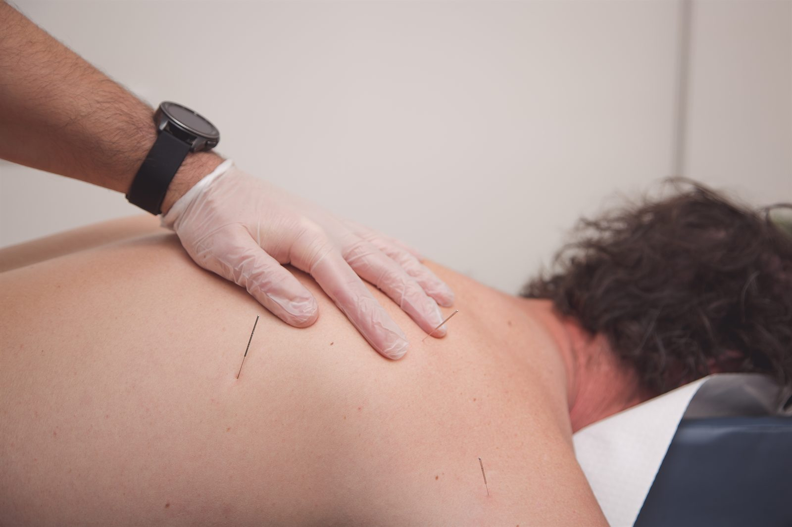
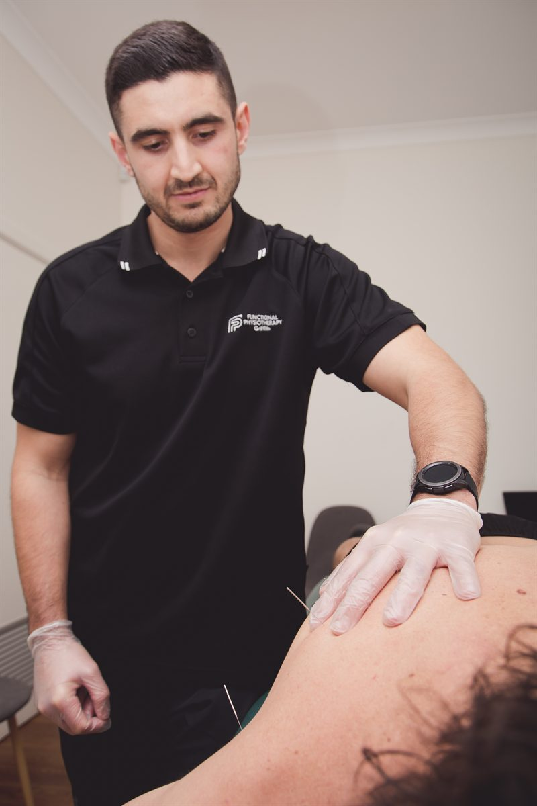

Dry needling uses fine, sterile needles inserted into selected muscles. At our Dapto clinic, it forms part of a physiotherapy appointment. We explain why it may be suitable, the risks and the alternatives before you decide.

Fine, single-use needles are placed into selected muscles. No medicine is injected.
A tender spot in a tight band of muscle is often called a trigger point. Pressing it may reproduce pain locally or elsewhere. For example, pressure on an upper-neck muscle may bring on pain around the head. Tenderness alone does not tell us the whole cause of a problem, so we also examine movement and other possible sources of symptoms.
The needle is inserted into a muscle selected during the assessment. It can produce a brief twitch or a deep ache. The way dry needling affects pain is still being studied; a twitch does not prove that a muscle has been “released”. Some people notice short-term symptom relief, while others notice little change.
We check how you respond and use that information to guide the rest of the appointment. Exercise, changes to training or adjustments to your work setup may also be relevant. If needling makes no useful difference, we reassess rather than repeating it automatically.
Dry needling is a special interest of our principal physiotherapist, Chris Vitucci, who has completed three advanced GEMt courses and assists in teaching the technique to other health practitioners. Before treatment, Chris explains which area he proposes to needle and talks through the relevant precautions with you. You can ask questions or choose another treatment.
Both use fine needles. The treatment approach and reasons for choosing the points can differ.
Traditional Chinese acupuncture uses a framework of meridians and points. Western medical acupuncture uses a medical assessment and has techniques that overlap with dry needling. In physiotherapy, dry needling usually targets muscles selected during a musculoskeletal examination.
The distinction is therefore more useful than simply “Eastern versus Western”. Ask what the practitioner intends to treat and why. For calf symptoms, for example, a physiotherapist may consider needling after examining the calf muscles, ankle movement and the activities that bring on pain.
At this clinic, needling sits within a physiotherapy plan. We discuss the treatment options and how each fits your symptoms and activities. You can continue with physiotherapy without having needles.

We examine the area and feel the muscles first, and tell you which muscles we intend to treat. The area is cleaned, and a needle thinner than the ones used for injections is inserted through the skin into the muscle. Most people describe the skin entry as a small prick or nothing at all. The sensation that follows (a deep, dull ache, sometimes a brief involuntary twitch) is the part people remember, and it usually lasts a few seconds.
Needles may be left in place briefly or removed straight away, depending on the muscle and the response we are after. A typical treatment covers a small number of targeted muscles rather than a large area, and forms part of a standard appointment rather than replacing it.
Responses vary. You may notice a change in symptoms, temporary soreness or bruising, or little difference. We explain what to expect for the area treated and discuss activity afterwards. Report symptoms that are severe, worsening or different from the expected soreness.
We discuss the risks, alternatives and your medical history before asking for your consent.
Temporary soreness, bruising and light-headedness can occur. Rare serious complications include pneumothorax, or a collapsed lung, when needling near the chest, including parts of the neck, shoulder and upper back. Training and precautions reduce risk but do not remove it. We explain the risks for the proposed area and alternatives before you decide whether to proceed.
Seek urgent medical care for new chest pain or shortness of breath after needling near the chest or upper back. Call 000 for severe symptoms. Do not assume these symptoms are normal soreness. We provide advice on warning signs and what to do after treatment.
That said, we will talk through your history before we needle. Tell us if you are pregnant, taking blood-thinning medication, have a bleeding disorder, a compromised immune system, a needle phobia, a pacemaker or other implant, lymphoedema in the limb, or an active local skin infection. These details affect whether needling is appropriate and which precautions are needed. If you would rather not have needles at all, say so: we can discuss manual therapy, exercise and other options.
There is no fixed course of dry needling that everyone needs. We review your response and discuss whether to continue. If it is not helping, we reassess the symptoms and treatment options.
Read about physiotherapy for spinal symptoms, sporting injuries and headaches.
Hands-on treatment and targeted exercise for back pain, neck pain and sciatica.
Read moreServiceDiagnosis, treatment and staged return-to-sport rehabilitation for athletes at every level.
Read moreConditionVestibular physiotherapy for BPPV and balance, plus treatment for neck-related headaches.
Read moreBook a physiotherapy appointment to discuss whether needling is suitable for your symptoms.